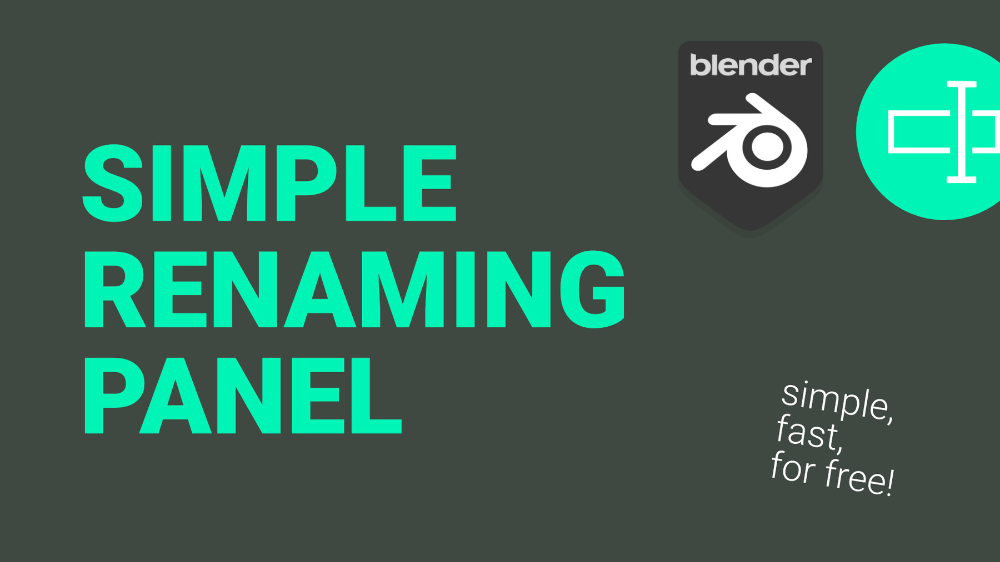
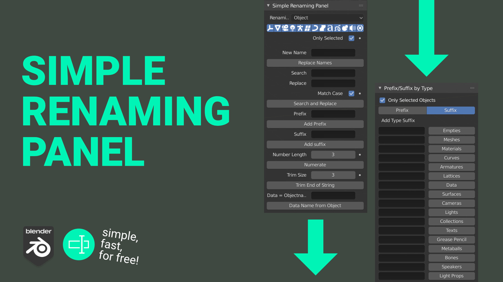
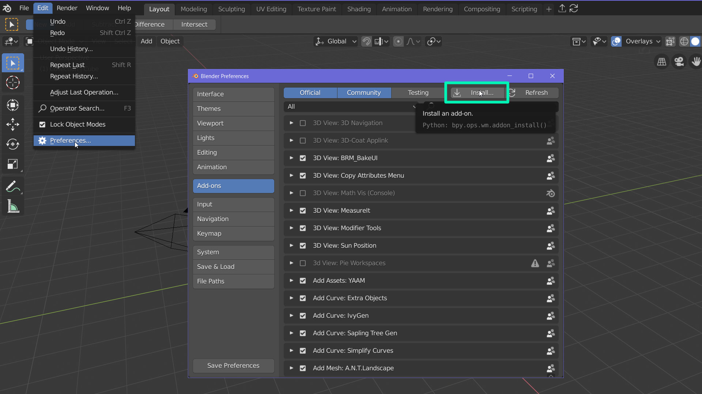
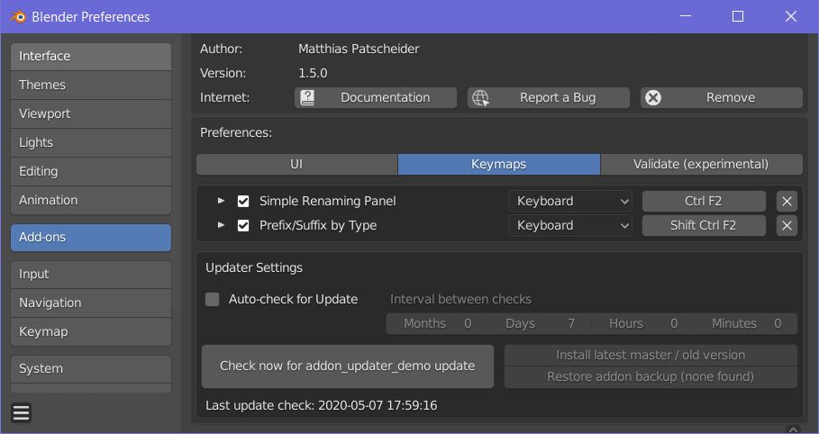
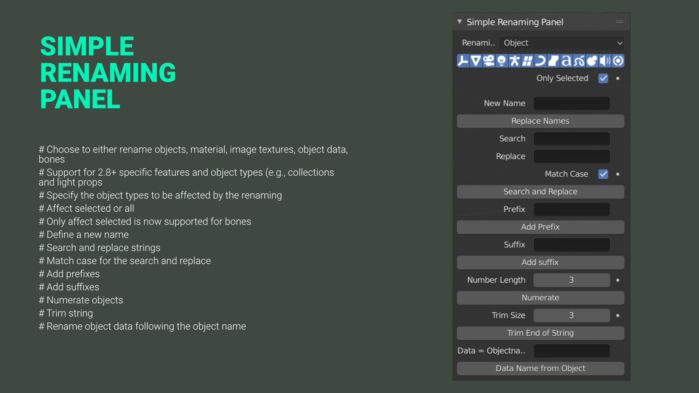
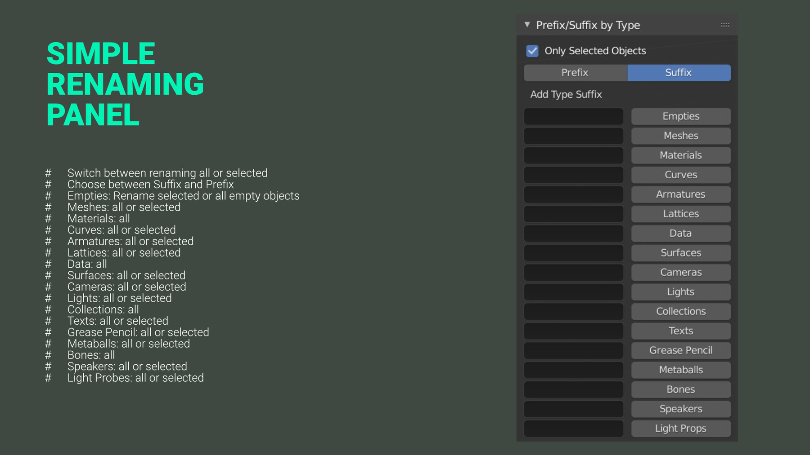
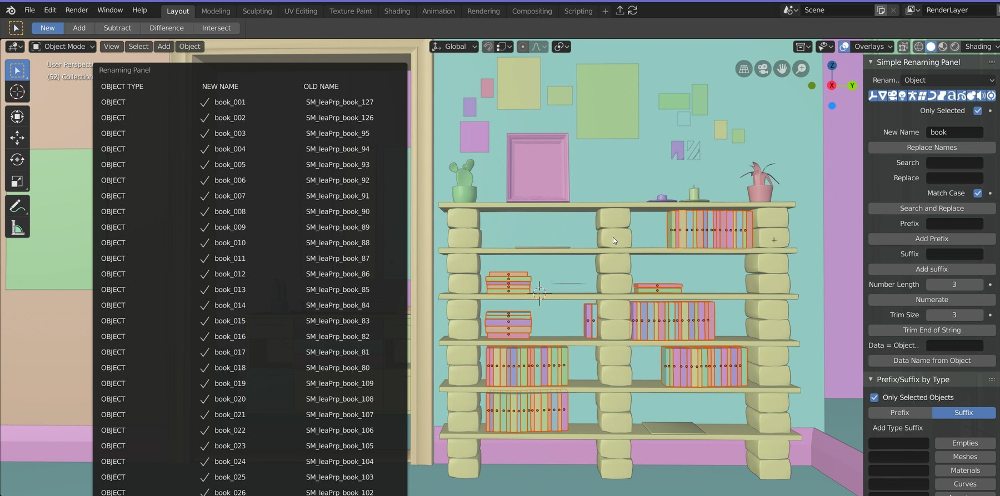

Simple Renaming Panel
 
Introduction
Simple Renaming Panel is a small, but powerful tool to rename more objects at once. The tool includes basic functionalities of adding suffixes, prefixes, search and replace, add suffixes depending on the object type and much more. Over the time more advanced features like a variable system were added. The tool gives a lot of power to you! You decide which kind of objects will be affected by the renaming task. Rename all or just selected objects, specify the affected object types like image textures, materials, objects, object data, bones, or collections. This tool can be a real everyday helper. Renaming multiple objects is often needed and keeping the naming conventions can be tedious. The tool provides you with a clear feedback of what has been renamed. This tool is kept simple to be user friendly but offers everything you need to stay organized.
Join the discussion at Blender Artists. You can thank me by leaving a rating at Gumroad or sponsor a coffee.
Download and Installation
You can download the Simple Renaming Panel for blender 2.79 and blender 2.80 from the releases section here. Like any other Add-on, you can simply install it by going to File > User Preferences > Add-ons and click at the button Install from File . In the new opened window choose the .zip file of the addon and press Install from file . The Simple Renaming Panel should now appear in your add-ons window and can be activated.

Once installed, you can use the auto updater in the user preferences to get the latest version of the addon.

Renaming Panel
The renaming panel is the heart of the application. It provides you with a simple and an advanced UI option. It can either be found in the properties panel or by pressing the user defined hotkey.

- Choose which kind of objects you want to rename:
- Changes affect selected or all
- Replace names with a new name
- Search and replace
- Search and select
- Match case for the search and replace
- Use regular expressions to improve your search
- Add prefixes
- Add suffixes
- Numerate objects
- Trim string
- Data: Keeping the object data names clear and organized can be painful in blender, this button simply renames the data according to the objects and adds a specified suffix.
Key Feature:
- Works for objects, materials, collections, image textures, object data and bones
- Choose if all or just selected objects should be affected
- Restrict renaming operation to specific object types (meshes, curves, empties, cameras, metaballs, light probes, volume objects etc.)
- Search and replace
- Match case option for search and replace
- Regex Support
- Add suffixes and prefixes
- Numerate
- Trim names
- Rename object data after object name
- Add suffixes or prefixes by specific object types
- Simple and clean UI
- Customizable UI position
- Auto updater
Improved Basic UI
I have improved the UI based on the input from Bookyakuno. This makes it easier to use, while keeping the efficiency from before.
Advanced UI (Experimental)
You can specify the number of leading zeros next to the new name input. Every # represents one 0. You can also disable the automated numeration completely. This is especially useful for the newly introduced variables. Additional Buttons allow you to easily add these variables and show you which ones are available for this renaming process. This UI is still WIP.
Search and Select
The search can now be used to select objects. This uses works with the settings for renaming like only effecting selected and objects of a certain type. This feature works for object renaming as well as bone renaming in pose mode.
Known Issues:
- Time: Ignores the current time zone and uses always Coordinated Universal Time (UTC)
- The selection order is still ignored
- Be careful with using the renaming variable for @p for the parent object
Type Suffix Prefix
The suffix prefix panel is collapsed as it is not used as regularly as the main renaming panel. The panel is used to add prefixes or suffixes based on the object type. It's a quick way to add e.g., "_geo" to meshes, "_empt" to empties, and "_cam" to cameras with one single click. The presets allow you to easily save different naming conventions for different projects.
 
- Choose between Suffix and Prefix
- Geometry: all meshes
- Material: all materials
- Empty: all empty objects
- Curve: all curves
- Armature: all armatures objects (not bones)
- Group: all groups
- Lattice: all lattices
- Data: all object data
- Surfaces: all surface objects
- Cameras : all cameras
- Lights: all lights
- Bones: all bones
Future:
- Improve the operation and variable descriptions
- Improve the UI for selecting variables with different columns like the Editor Type dropdown
- Add more user defined variable slots
- Add renaming ariables for other asset types like textures and actions
- Remove duplicate code for the simple and advanced UI
- Add specialized renaming operators. (E.g., name baking pairs)